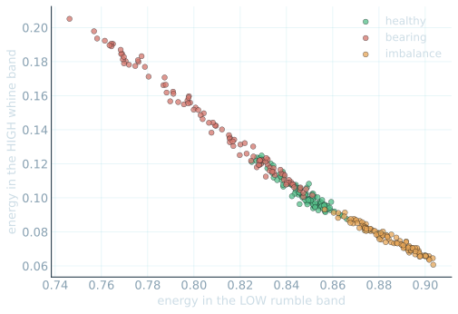
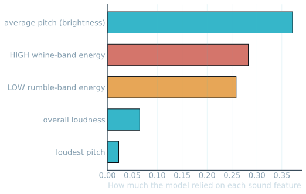
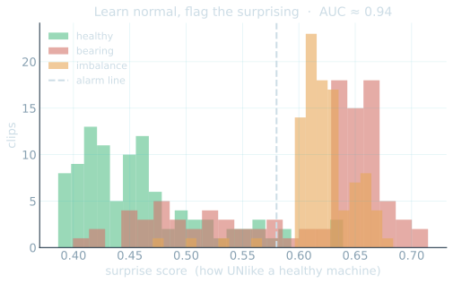

Speech I · use your ears, not your eyes
This machine is running. Healthy, or failing?
Cards up A / B — I tally, then we reveal later
Predictive AI · Session 03 of 04
03
Speech Isound becomes numbers.
Past sounds
a pattern
predict the next
◷ The 4pm question is still open — where does this AI break?
Before we build · you tell me
Three things from this morning — say them back.
The words the machine read this morning — feature or label? → feature (the input)
- A model that scored high but caught zero urgent notes — what's the trap? → accuracy hides the rare, costly class
- Where did Text II secretly cheat? → the header trap — a leaked giveaway feature
Room answers first · then I reveal
One idea · then it's the same machine as this morning
A microphone turns sound into a list of numbers — that's all.
Measure
air pressure, 16,000×/sec
→
Becomes
a long list of numbers
→
Sort
the same machine as this morning
Words became numbers this morning. Sound becomes numbers now. Once it's numbers, nothing about the machine changes.
Press play · then we draw the sound
Draw the numbers and the fault becomes a picture — a spectrogram.
Time → across · pitch ↑ up · bright = loud at that pitch
Same fair test as this morning · learn on some, grade on the rest
Three sounds to tell apart: healthy, bearing, imbalance.
Learn
labelled sound-pictures
→
Find
a pattern in the pitches
→
Grade
held-out clips it never heard
It is scored only on recordings it never heard while learning. Anything else would be cheating — the same rule as the notes.
Room locks a guess on cards · then I reveal
Three sounds, told apart by ear-turned-numbers — how often right?
Run the cell · your Colab tab
It sorted raw sound into three families — on its own.
No one drew these clouds. It grouped the sounds by their numbers — healthy, bearing, imbalance.
Run the SOUND MAP cell · Shift+Enter

Each dot is one recording · three families separate · offline copy of your Colab output
On your feet · vote with your body
A machine on your floor sounds off. Trust the ear, or the model?
Step LEFT for the trained human ear · RIGHT for the model that listens every second · middle if you're torn.
Everyone stands · move left / right · I read the room
Which part of the sound did it lean on?
It leaned on the whine and the rumble — the same tells a veteran fitter listens for.
No one told it the high whine means a failing bearing. It found that pattern itself, from past labelled sounds.
- The high whine (~2–3 kHz) — does most of the work for bearing faults.
- The low rumble — the rotation hum — separates healthy from imbalance.

Feature weights learned from past labelled sounds · offline copy of your Colab output
The money shot · what the fitter heard
One fitter said it sounded wrong — no gauge agreed. The bearing failed in flight.
This is that sound, drawn out. The steady rumble — the engine turning. The bright whine up high — the bearing failing, hours before any instrument moved. The machine sees it the instant it appears.
Breathe · before we change the question
A whine no gauge could catch.
That model knew bearings and imbalance. But what about a fault it was never taught — one nobody ever labelled? It can't name what it's never seen. So we change the question.
Can't label every failure? Learn only NORMAL.
Teach it only what normal sounds like — then flag anything surprising.
It never sees the new fault in training. It just knows this doesn't fit normal — and flags it.
- Learn normal from hours of healthy machines — no fault labels needed.
- Anything far from normal gets flagged as surprising — even faults nobody labelled.
- Separates normal from strange at AUC ≈ 0.94 — strong, honestly not perfect.

Surprise score · most sound is normal · the flagged few sit in the tail · AUC ≈ 0.94
You're skeptics — so here's where listening fails
Three ways the ear breaks.
Noise drowns it — a loud shop floor, a second machine, a dropped tool, and the tell-tale whine smears into the racket.
- A new machine it never trained on hums at a different pitch — so its normal looks surprising, and it cries wolf.
- A silent fault — a slow crack, a sensor drift — makes no sound at all. No ear, human or machine, can hear what doesn't ring.
- These aren't bugs — they're the shape of listening. A mic only knows what reaches it. Knowing that is your job.
You tell me · cards or out loud
Three questions before the break.
What is a spectrogram? → a picture of a sound (time × pitch, bright = loud)
- In anomaly detection, what's the only thing we teach it? → what NORMAL sounds like — flag the rest
- Name one place listening breaks. → noise · a new machine · a silent fault
Room answers first · then I reveal
The one line that carries all day
It learns a pattern from the past.
Past labelled sounds
the whine pattern
predict the next machine
Speech I → Speech II · the rail moves to the last dot
How OFTEN does it mis-hear — and does that even matter?
Today it sorted sounds. Last session: it listens to a voice and writes the words — and a single misheard digit could be the most dangerous error of the day.
◷ The 4pm question is still open — where does this AI break?